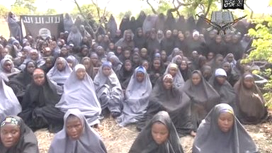

Do Canadian laws hamper African immigrants’ parent-to-child upbringing ?
By Peter Uduehi
In Toronto recently, police reported the death of Aloy Onochie. He died during fisticuffs with his teenage son Uchenna Onochie.
But many in the Nigerian community are livid; not because the 61-year-old father is no more, but because of the way he died: killed in a blow by blow physical fight with a child he birthed. To many Africans, this incident is simply an abomination.
Asked what to make of the incident, Daniel Isesele, president of a Esan United in Canada, a Nigerian tribal grouping whose business is to cater for members’ well-being, “this is unbecoming of our culture, but you have to understand why this type of incident occurs”, noting “it is part of a system which does not allow parents to instil the fear of parental guidance in children. In Africa we mete out corporal punishment to our kids when they do wrong but you cannot do that in Canada where it is considered abuse”, he said. “Children grow up having the utmost respect for their parents as not only are they under the guidance of their blood parents but also under the watchful eyes of the entire elder community,” he explained.
Though details of the relationship between the senior and junior Onochies are not known, it is known that Uchenna lived with his father Aloy, police said. However, Isesele is ready to wager that the teenager, because he was born in Canada, has little knowledge of African traditions. That may have been Aloy’s Achilles’ heel”, he said.
Anti-radicalisation Toronto Somalis nipping Jihadists’ influence in the bud
By Peter Uduehi
“We cannot pretend that our children in Canada could not be influenced by these crazy people who call themselves Muslims. We are aware of how terrorist groups like Al-Shabaab and ISIS have poisoned the minds of innocent Somali and other African youths everywhere they can find them,” that’s the summation Jibril Muhammed, Somali community activist in Toronto.
He told the African World News he is fed up of reports relating to stories and events of how Jihadist terrorists have successfully recruited African youths in the US state of Minnesota, Kenya and several European countries, noting: “we cannot pretend that our children in Canada could not be influenced by the Jihadists who are nothing but fake Muslims as far as he is concerned. “We know who the real Muslims are and we must root them out,” he said, adding that many members of the Somali community in Canada are good people who are on the lookout for the terrorist-minded people.
Muhammed said the RCMP, parliamentarians and the police are aware of the community’s efforts to rein in these Jihadists if they exist among us, “but first we have to protect our children against these bad eggs, every one of us…as kids can be easily influenced through peer pressure. We have to watch the type of media our children are listening to and watching”, he said.
Agrees another activist, Mohammed Abdi: “Canada has been good to us and any terrorist trying to harm this country has no chance to use our kids against it. On my part, I am constantly educating my teenage children about what is the right Islam”, he explains, stressing “I tell them always that the ISIS and Boko Haram and Al-Shabab people they see on television are practising the wrong Islam”.
Are Africans in Canada changing their diet to their own detriment?
By Peter Uduehi
Many experts are of the opinion that African immigrants who change their traditional diet after a few years of arriving in Canada tend to become less healthy later.
To buttress that point, a recent report by Statistics Canada finds two studies pointing in the same direction for most newly arrived immigrants to Canada. Overall, the studies show, newly arrived immigrants to Canada had lower mortality rates than the Canadian-born, and also reported lower levels of fair or poor health. Those mortality rates tended to rise the further removed immigrants were from their arrival in Canada, as were the reported levels of fair or poor health. Data from surveys of immigrants showed in fact that those who had been in the country for 10 years or longer reported being less healthy than residents born in Canada.
Tanzanian-born Toronto resident Dr. Wasira Bokore, a family physician, says generally the African immigrant succumbs to “a new environment where time is limited for cooking your meals and begins to adopt new eating habits, eating burgers, fast foods and fatty foods and these things are not good for your health”, adding that matters are made worse when “an exercise regimen is absent in one’s daily existence”. He said immigrating to a new country can have a deleterious effect on one’s health if “you lose focus”, adding that life in the Western world is “markedly different from that in Africa where you are constantly without the same levels of comfort as you would find here”, he said.
African professionals making late inroads in Canada
By Peter Uduehi
Why do Africans make late professional inroads in their respective career disciplines?
The answers are legion but Nigerian-born Canadian resident Dr Adeleye King says the main reason is that many African do not do enough research about Canada to find out about the system before arriving its shores. “If they did, they would know exactly the type of skills needed to survive with their professional know-how.” He said it’s important to plan ahead before immigrating and once here “they should never lose concentration of why they are here, don’t straddle your life between here and the one you just left”.
Dr King, executive director of Canadian Institute of Leadership and Development (Africa), said when African professionals first come to the country as immigrants they are shocked to learn that they are being required to do more learning in their fields “because Canada requires a different level of certification and designation from the ones in Africa.
“Certain professions like engineering, for example, require a designation before you can be accepted for work as an engineer. It’s different in Africa where you are required only to be certified,” he explained, noting, “the same applies to other professions.”
King said personal issues also play a role in preventing African professionals from making quick successes in the Canadian economy, adding that sometimes our priorities are not in order. “Members of other immigrant groups start small when they first come to Canada…they manage in small apartments and save up enough money to either start a small business to tide them over or take their time to ready study the system, but in our case many of us want to start big when they enter a new country. That’s not possible,” he explained.
Going beyond the rhetoric of Black History Month
BY PETER UDUEHI
Since the celebration of Black history month began 39 years ago in the US, a lot of emphasis has been placed particularly in the month of February on the mere semantics of what Black people have achieved as a cultural group in history, and especially in the history of the Americas. Not much, however, is being said of who Black people are as Africans and who Black people are as a people.
What I am trying to stress in the foregoing is that no one has been audacious enough to state in unequivocal terms “who Black people really are” in these February months; not only as a displaced people, but also as a once-enslaved and downtrodden people who deserve compensation and reparation for hundreds of years of institutionalised injustice and rapaciousness by established and discernable White institutions and governments from Europe to the Americas.
Anybody with a sense of history and good conscience must feel troubled that while other historically oppressed, vitiated and villified ethnic groups eventually received compensation or reparation for past injustices, Blacks in Europe and the Americas receive nothing. Survivors of the Holocaust recently received 60 million dollars from a French-US fund as compensation for Hitler’s crimes against the Jewish people, not to mention billions of dollars meted out to thousands of Jews and the state of Israel by the Germans and other European institutions. The U.S. government did the same for thousands of interned innocent Japanese who were illegally incarcerated during the Second World War due to anger over Pearl Harbour. Various other ethnic groups who suffered humiliation from Australia to Canada have received compensation from governments. Why are Blacks in the Americas and Europe and Africa not receiving similar compensatory commitments? Don’t Black lives really matter?
Proponents of reparation are not pleading for handouts as they fervently believe the crimes must be atoned for; neither are they basing their demands on the fact that other wronged ethnic groups have been propitiated. The fact is American and European enslavement of Africans was a sin crying to heaven for vengeance. It surpassed the oppression suffered by others tenfold, dehumanising Black people for centuries. It continues to do so today as its weight still burdens all people of African descent even in these modern times. Those who want to wish away the calamitous effects of slavery must be reminded of the atrophy of Black civilisation; yet nary an American Congress has apologised for the scourge that slavery dealt. Some political smugs in the US and Europe naively argue that because the Trans-Atlantic Slave Trade officially ended 120 years ago, Blacks must stop talking about it and just move on, dust themselves off, work harder and achieve like others; like Jews who too were persecuted. Yes, Jews were also persecuted throughout history, but those who committed crimes against their number were brought to book and their forebears paid (and continue to pay) financially for their sins. It is called reparation or compensation. And yes, many reparation activists believe that because Jews are a wealthy class everywhere, and because their financial clout have enormous influence on major aspects of western economies, no American or European power have had the temerity to ignore their demands for compensation. Add to that the fact that other wronged ethnic groups are not as visible a minority group as Blacks as objects of discrimination.
A disappointing aspect to the reparation issue is the seeming silence of the current and first Black president of the US Barack Obama. His voice on the matter will make a difference; it should be indeed an agenda of his to make sure that an injustice is corrected. Maybe it will be the last jab he throws at the detractors as he leaves office. It will be a delight.
For what reparation does is give the wronged a headstart. It emboldens them emotionally because someone was made to a pay a price. Police in America still brutalise Blacks in the streets because they don’t respect Black lives. It’s the direct result of a culture that grudgingly holds authority figures accountable in America when Black lives are violated. Black history month will continue to be a rant until Black people begin to challenge all countries whose forebears benefitted from their sweat and blood in growing their economies for more than 400 years.
Islam a curse or blessing to Africa?
By Peter Uduehi

Legendary Nigerian musician and band leader Fela AnikulapoKuti, lyricized that “Islam and Christianity have brought wars to Africa to create confusion in the centre of the world”.
Fela, as he was popularly called - and revered by his adoring fans as a great artist, revolutionary and prophet - added that “these religions are foreign to Africa and would be the demise of the continent” if not checkmated.
By virtue of the recent happenings in Nigeria and many other African countries with regard to Islamic fundamentalism and terrorism, which has claimed at least 1,000 lives every year since 2004 in Africa’s most populous nation alone, many now believe the religions of the continent’s former colonisers and intruders are a curse rather than a blessing.
The recent kidnapping of more than 200 girls from their dormitories in a Nigerian boarding school in the northeast of the country is adding more fuel to that opinion long held by the likes of Fela. The militant and terrorist Boko Haram group, an affiliate of Al Qaeda, has claimed responsibility for the abduction of the girls, boasting in a video released three weeks after the girls went missing that it will sell the girls who `they say “should be married instead of being in school”. To add more insult to injury the group carried out yet another bomb blast three weeks after the girls’ abduction killing 12 people; in the same place where the same atrocity was committed a month earlier.
Also called the “Nigerian Taliban”, imitating their gurus in Afghanistan, Boko Haram has been blamed for many criminal activities and atrocities in Nigeria. The group believes, as its name suggests, that “Western education is immoral” (or “sinful”). It seeks an Islamic state or caliphate in the country, totally oblivious to the fact that its manifesto is unachievable and ridiculous, says Joseph Odibo, president and founder of the anti-injustice organisation People Against Gangsterism, Terrorism and Corruption, an African movement based in Dublin, Ireland.
“The world is leaving them behind in all aspects of human development, Nigerians from the south are also leaving them behind and it is quite clear that the North’s unserious approach to education because of a fanatical approach to religion will be their doom,” Odibo stressed.
Of the 57 million children not enrolled in elementary school worldwide, 10 million live in Northern Nigeria alone, according to the United Nations. The north of Nigeria is predominantly Muslim while the south is predominantly Christian and Africanist. The World Health Organisation has been grappling with the return of polio in Northern Nigeria because the leaders of various communities in that part of the country keep telling their people that Western medicine is out to drive a lethal blow into the blood of Muslims through vaccinations to prevent them from procreation and better health. Ironically it’s a propaganda that is costing lives and improvement in the general wellbeing of millions of Northern Nigerians, hence the prevalence of polio there.
“Religion, for many Northern Muslims, has replaced the once-thriving African culture that existed there before the advent of Islam from the Middle East,” noted Fela, who as a popster for many years before his death in 1997 , used his music to challenge Africa’s political leaders to good governance and a revival of the “African Personality” and African ideologies based on workable ancient practices of mutual respect and zero tolerance for dishonesty.
The ethnic groups of Northern Nigeria who converted to Islam are somehow different from their relatives in other parts of West Africa who embraced Islam but kept the essential aspects of their African heritage and culture intact. “We Africans have our ideals and traditions too,” Fela explains in the song BBC, indicating “we have our rituals for teenagers growing into adulthood, we have our music, our literature, our art, our system of justice, marriage, land tenure, our dance and lifestyle, ” in the song Underground System.
Odibo says “when you factor in the problems many in Northern Nigeria are facing in light of Boko Haram atrocities, the fact that education is still backward in that part of Nigeria compared to the south of the country which is predominantly Christian, and the almost disappearance of an African identity and culture among the people of the north, one can only conclude that Islam has been a curse rather than a blessing on the continent. And it’s important to remember also that Nigeria is a huge country in Africa…it is one-fourth of the entire African continent,” he added.
Yet Nigeria is not the only nation where Islam’s image is facing a public relations setback. In Mali, where some Muslim Tuareg invaders and insurgents from nearby Mauritania and North Africa made incursions into the West African country last year, libraries in the famous and ancient city of Timbuktu (renowned for its historical value to the Black race and centre of learning for being the site of the first university in the world) were burned and looted in the name of Allah, villagers were routed from their homes and told to replace their African literature and music with Muslim hymnals as they were instructed to cease adherence to their traditional way of life. Yet the people to whom they gave instructions in Mali were themselves good Muslims. Northern Mali, seized by the Muslim fanatics for months with a reign of terror lorded over its citizens, world-class musicians from the country – themselves avowed Muslims – started a campaign against the fanatics.
Though the Muslim insurgents have since been flushed out of their positions by the combined forces of African, French and United Nations troops, virtuoso Malian guitarist Habib Koite told this reporter during a recent tour date to Toronto that “these so-called Islamists who took over my country are not real Muslims. They call themselves Muslims but they are not practising Islam. Nowhere in Islam is it acceptable to kill anyone in the name of God. Nowhere does it say in Islam that you must disrespect anybody’s culture. They are wasting their time anyway because nobody can tell an African not to play music. Music and being African are one and the same. I am a Muslim and I think I am a good Muslim but I am also an African musician; music keeps my people alive and no one can tell us not to do the things our forefathers have been doing for thousands and thousands of years, Islam or no Islam,” Koite said.
It’s a point echoed by fellow Malian singer Fatoumata Diawara who also spoke to this reporter last winter while touring Canada. “How can you stop African people from dancing and playing music? It is not possible,” she says, adding “nothing, not even Islam can stop us or change that. I am a Muslim and these invaders don’t know their bearing it seems. This is Africa. We have been playing music before Islam and Roman Catholism found their way into this continent.”
The invaders who call themselves Ansar Al-Dine are also Al Qaeda affiliates in the Maghreb (North Africa). They, like Al Shabbaz in Somalia, have vowed to fight another day. Meanwhile, Al-Shabbaz, flushed out of Somalia about the same period the Tuaregs were dealt with in Northern Mali, recently carried out a series of bombings in Kenya’s port city of Mombasa killing scores of innocent people.
“Christians in Africa don’t do the things that some of our Muslim brothers do here, like go on suicide missions terrorizing everyone in the name of ideology and Jesus,” notes Odibo. He went on: “And although the average Muslim will tell you that the criminal elements among them carrying out these nefarious activities are simply criminals and have nothing to do with the religion, you don’t feel any glaring outrage from their leaders”.
Speaking in an interview in India last year, Nigerian and Nobel Literature Laureate Wole Soyinka said, in reference to Nigerian-born Detroit-Christmas underwear bomber Omar Farouk Abdulmutallab, that Islam is “illogic…because none of the other religions preach apocalyptic violence”.
Throughout Africa that illogic is festering as Christians, in the last two decades (in the case of Nigeria for over four decades now, considering the Maitatsine terrors and horrors of the 1970s - a period which recorded the start of overt hate crimes meted out on Christians by Muslims), continue to face mounting intolerance from their Muslim counterparts. Their churches are burned, members killed during church services and sometimes villages raised to the ground due to Islamist violence. The Nigerian-born football international Victor Moses, who plays for English Premiere League’s Chelsea FC, lost both his parents (themselves Christian pastors) to the violence that erupted between Christians and Muslims in 2001 in the northern Nigerian city of Kaduna. And South Sudan peoples (predominantly Christian), tired of discrimination and maltreatment from their northern neighbours (predominantly Muslim), decided to ask for independence and two years ago got their wish as one of the newest nations to join the United Nations. Meanwhile, a warrant for the arrest of Sudan president Omar Bashir is still being held up by the International Criminal Court in The Hague for crimes against humanity, mainly against the people of South Sudan. Sudan, before the secession of South Sudan, even ignored the composition and wishes of the latter and decided to become a member of the Arab League and Organisation of Islamic Conference (OIC).
“What kind of nerve do Muslims have?” asks Odibo. “How can you bring a pluralistic grouping under the umbrella of one monolithic group that speaks to the pride of only one member of your community? Where is that done? It is the height of disrespect to your community...so what the Muslims did were just utterly disrespectful,” Odibo said.
Similar intolerance is experienced by Egyptian Coptics at the hands of the Muslim Brotherhood whose members have been known to burn churches and terrorize, harass and kill members of the Christian faith. In Central African Republic, many Muslims were sacked from an area in the capital Bangui recently following months of clashes between Christians and Muslims.
Matters came to a head in late 2012 when Muslim rebels, supported by Chadian and Sudanese fighters, quickly overran the country’s army. Chad and Sudan are predominantly Muslim countries. After a series of peace deals with the opposition were not honoured, Muslim rebels invaded the capital and overthrew President François Bozizé last March and installed the country’s first Muslim president, Michel Djotodia. Widespread human rights abuses by the Muslim rebels — such as the pillaging of neighborhoods, and the rape and killing of people — led to the creation of the anti-Balaka militias, mainly consisting of Christians and animists. The Christian militias attempted a coup early last December, with violence exploding between the two communities in the following days. The forced resignation of Djotodia last month, amid mounting international condemnation, emboldened the attacks of Christian militias on those it accuses of having cooperated with the government.
Jean-Bedel Bokassa, one of many sons of the late former Emperor of the Central African Republic, told this reporter “this is probably the first time you are hearing about a ‘Christian militia’ anywhere in the world standing up against Muslims or taking matters ito their own hands to stem the tide of Muslim terrorism before it grows wings. We usually hear of Muslim militias, because Christians and non-Muslims are just tired of folding their arms and not doing anything against the intolerance of Muslims. They have to do something, that’s for sure,” he said.
The prolonged and escalated violence of in CAR led to an emergency meeting of the Organization of Islamic Cooperation at the body’s headquarters in Saudi Arabia. The world’s largest bloc of Islamic countries agreed to “urgently dispatch” a high-level mission to the capital, Bangui, to explore the situation, express solidarity with Muslims and contribute to any peace talks.
But the “peace” approach to conflicts has never been Islam’s strong suit in Africa, where the Almoravids invaded the continent in medieval times to force conversion (same that Boko Haram was seen doing to their girl captors in a recent video); then an offshoot of an Arab militia rose in 1914 led by fundamentalist Usman dan Fodio who ran a campaign of Jihads across the Sahel only to be stopped in the Savannah on his way to the Atlantic coast of West Africa.
“I cannot really say Islam is the culprit here but the way some of our members have toyed with the religion in Africa or most parts of the world does not bode well for the religion in our continent, admits Diawara. “I am a Muslim and I think to some extent Islam has been a curse to Africa when you see what African people are suffering because of it,” she said, indicating that “we must all stand up as good Muslims to fight the bad ones among us. Too often, the big Islamic countries just stand and look.”
For Fela, who probably summed it up best, “peace and progress in Africa are only possible when foreign religions have been dealt an irresistible blow”.
“With religion,” the legendary musician told me in 1989 after his performance at the oldest lounge in New Orleans, The Tippitinnas Nightclub, “comes the culture of the people you got it from. Westerners brought their religion to Africa during colonialism but they also brought with them fertilizers which poisoned and destroyed our crops and made us dependent on their agriculture. Both Christianity and Islam are bad for Africa as you can see,” he said, adding, “though I can tell you that Islam is worse in Africa because it respects no-one’s way of life. This is why you can never catch me in a place like Saudi Arabia. Islam does not look kindly on people like my mother because the religion is detrimental to women generally. My mother was the first woman to drive a car in Nigeria’s history and the first woman to wield the kind of power that single-handedly dethroned a king in African history. They (Islam) don’t give women this type of power. But many of our African people go to Mecca every year to sell their conscience to a foreign religion and culture. They forget they are Africans first. We Africans had our culture and religions before the White man and Arabs came to our shores. We were the first people on this planet and we knew God before they did. Islam and Christianity are corrupting Africa and very soon we will be fighting bigger wars because of these foreign religions.” With the Boko Harams, Al Shabbaz’s and Ansar Dines, Fela has, to a large extent, been vindicated. It is why when he lived many thought he was a prophet hence the nickname in a Nigerian language
SPORTS:
Morocco fined as CAF seeks up to $11M for failure to host Africa Cup
Shortly after the conclusion of the recently held Africa Cup of Nations in Equatorial Guinea, heavy fines were handed down on Morocco.
The Maghreb nation was fined $1 million by the Confederation of African Football and may ultimately have to pay an additional $10 million for failing to host this year's soccer tournament because of fears over Ebola.
Equatorial Guinea presented itself as a goodwill gesture to replace Morocco after it bailed out. CAF also went further with its punishment for Morocco by banning it from the next two tournaments in 2017 and 2019. CAF said it was seeking these fines as compensation for backing out of the hosting agreement.
Morocco Football Federation vice president Nourreddine El Bouchhati told a local news website that "a meeting will be held within the federation to discuss the measures to take."
CAF said the decisions were made by its executive committee, which met in the Equatorial Guinea capital of Malabo during the ongoing African Cup.
Equatorial Guinea stepped in at short notice late last year to host the three-week tournament in Morocco's place. It ends on Sunday.
Morocco had declined to stage the 16-team championship on its scheduled dates of Jan. 17-Feb. 8, citing fears over the spread of Ebola from West Africa. It asked CAF for a delay. CAF refused and approached Equatorial Guinea.
CAF said in its statement that it considered Morocco's request that the tournament be delayed until October a "refusal" to host. CAF rejected Morocco's stance that it needed to postpone the tournament because of high health risks from fans traveling from Ebola-affected regions in West Africa.
The deadly Ebola virus has killed nearly 9,000 people in the outbreak, mainly in the three worst-affected countries of Liberia, Sierra Leone and Guinea. Only Guinea qualified for the final tournament.
The $9 million in damages demanded by CAF is "in compensation for all material damage sustained by CAF, stakeholders and partners as a result of the decision (by Morocco) not to host AFCON 2015," CAF said.
Moroccan soccer authorities had been expecting a financial penalty but no tournament ban, and the severity of the punishment appeared to have taken them by surprise.
Last month, federation president Faouzi Lakjaa told a local radio station that there would be "no sports sanction," and Morocco and CAF were moving toward an arrangement to settle the final bill.
He reiterated that stance on Thursday, a day before CAF's announcement.
The sanctions will put more pressure on the extremely strained relationship between North African countries and CAF, which has been led for nearly 30 years by Cameroon's Issa Hayatou. Earlier, CAF suspended Tunisia's federation president and threatened that country with a ban from the 2017 African Cup if it didn't apologize for suggesting the body was biased against it. Tunisia refused to apologize.
Tunisia also fined and faces ban if it does not apologise
Tunisia football federation is on the verge of being banned from the 2017 Africa Cup of Nations if it fails to apologise for a disparaging comment made against officials of the Confederation of African Football during the recently-concluded continental tournament in Equatorial Guinea.
The North African nation was fined 500,000 dollars after some of its football players charged at the referee in the aftermath of their quarter-final match against host-nation Equatorial Guinea which they complained they lost because of official bias. Reports say the players also damaged equipment in their locker rooms as well as other infrastructure, including a fridge.
Tunisian officials say their side was cheated when the referee gave a controversial penalty to the home side, stressing that sub-Saharan African countries’ officials are biased against them.
Issa Hayatou, the Camerounian president of CAF for 30 years, asked that Tunisia apologise for their comment but they refused. Correspondents say their refusal to apologise carries the risk of being banned from the next competition in 2017. But there’s still time to tender an apology, CAF said.
Nigerian
Stephen Keshi on shortlist for Burkina Faso job
Former Nigeria coach Stephen Keshi is in the running to become Burkina Faso's coach after being named in a three-man shortlist for the post.
The Burkina Faso Football Federation (FBF) is also considering ex-Ghana coach Milovan Rajevac and ex-Gabon and Niger coach Gernot Rohr.
"German Rohr, Serbian Rajevac and Nigerian Keshi have been selected by the Commission," read an FBF statement.
"The FBF plans to name the successful candidate within three weeks."
Burkina Faso are looking for a successor to the Belgian Paul Put, who left the post after a disappointing Africa Cup of Nations campaign in Equatorial Guinea.
Runners-up in the 2013 finals in South Africa, the Stallions crashed out in the group stage of this year's tournament, which was won by Ivory Coast.
Keshi is currently without a role, having been unable to agree a new deal with Nigeria following the failure to qualify for this year's Nations Cup.
The 53-year-old is hoping his previous successes with Nigeria, winning the 2013 Nations Cup title and reaching the second round of the 2014 World Cup in Brazil, will help him clinch the post.
Rajevac steered Ghana to the final of the 2010 African Cup of Nations and the last eight of the 2010 World Cup in South Africa.
Rohr took Gabon to the quarter-finals of the 2012 Nations Cup on home soil and also managed Niger at the 2013 edition but failed to get them out of the group stage.
Just-in:
Morocco appeal to CAS over bans
Morocco has appealed to the Court of Arbitration for Sport over their expulsion from the next two editions of the Africa Cup of Nations.
The North African country was banned from both the 2017 and 2019 tournaments for failing to host the 2015 edition.
The country's football federation was also fined US$1m (£650,000) and ordered to pay 8m euros (£5.9m) in damages.
Morocco wanted to postpone the finals because of the outbreak of Ebola in Africa but their request was rejected.
Instead, the Confederation of African Football relocated the tournament to Equatorial Guinea, who stepped in as replacement hosts in November - only two months before the start of the event, which was won by Ivory Coast.
Earlier this month, the Royal Federation of Moroccan Football (FRMF) said it "rejects all of these sports and financial sanctions".
The FMRF has taken the case to the Swiss-based court, requesting the penalties be rescinded by the end of next month.
"An arbitration procedure has been opened and is being conducted according to the Code of Sports-related Arbitration," Cas said in a statement.
FRMF spokesman Mohamed Makrouf said: "We have taken our case to the Cas and we will soon take it to the International Chamber of Commerce in Paris.
"This is not a conflict with the Caf. The law allows to appeal and we will accept any decision from the court."